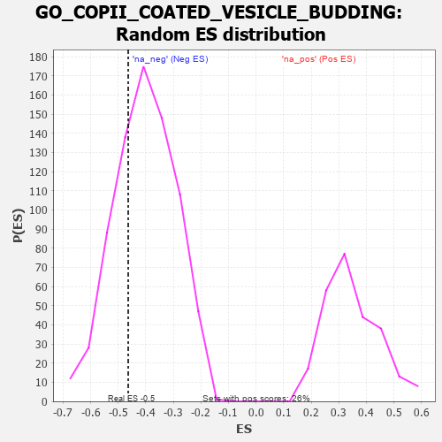

| | | Dataset | 7d |
| Phenotype | NoPhenotypeAvailable |
| Upregulated in class | na_neg |
| GeneSet | GO_COPII_COATED_VESICLE_BUDDING |
| Enrichment Score (ES) | -0.4636999 |
| Normalized Enrichment Score (NES) | -1.1502109 |
| Nominal p-value | 0.2885906 |
| FDR q-value | 0.699075 |
| FWER p-Value | 1.0 |
Table: GSEA Results Summary
 Fig 1: Enrichment plot: GO_COPII_COATED_VESICLE_BUDDING
Fig 1: Enrichment plot: GO_COPII_COATED_VESICLE_BUDDING
Profile of the Running ES Score & Positions of GeneSet Members on the Rank Ordered List
| PROBE | GENE SYMBOL | GENE_TITLE | RANK IN GENE LIST | RANK METRIC SCORE | RUNNING ES | CORE ENRICHMENT | | 1 | NSF | | | 243 | 0.947 | 0.0544 | No |
| 2 | CUL3 | | | 1893 | 0.321 | -0.1241 | No |
| 3 | MCFD2 | | | 1975 | 0.309 | -0.1066 | No |
| 4 | GOSR2 | | | 2050 | 0.298 | -0.0891 | No |
| 5 | CNIH1 | | | 2159 | 0.283 | -0.0773 | No |
| 6 | SEC13 | | | 2330 | 0.256 | -0.0757 | No |
| 7 | LMAN1 | | | 2743 | 0.192 | -0.1103 | No |
| 8 | SCFD1 | | | 2783 | 0.185 | -0.0985 | No |
| 9 | TFG | | | 3243 | 0.114 | -0.1460 | No |
| 10 | BET1 | | | 3817 | 0.025 | -0.2158 | No |
| 11 | SAR1A | | | 4304 | -0.060 | -0.2715 | No |
| 12 | STX5 | | | 4400 | -0.077 | -0.2766 | No |
| 13 | USO1 | | | 4855 | -0.168 | -0.3186 | No |
| 14 | VAPA | | | 5939 | -0.449 | -0.4145 | Yes |
| 15 | SCAP | | | 5986 | -0.466 | -0.3784 | Yes |
| 16 | TMED2 | | | 6665 | -0.746 | -0.3968 | Yes |
| 17 | RAB1A | | | 7096 | -0.993 | -0.3618 | Yes |
| 18 | VAPB | | | 7482 | -1.378 | -0.2865 | Yes |
| 19 | PDCD6 | | | 7630 | -1.615 | -0.1601 | Yes |
| 20 | GRIA1 | | | 7836 | -2.260 | 0.0170 | Yes |
Table: GSEA details [plain text format]

Fig 2: GO_COPII_COATED_VESICLE_BUDDING: Random ES distribution
Gene set null distribution of ES for GO_COPII_COATED_VESICLE_BUDDING